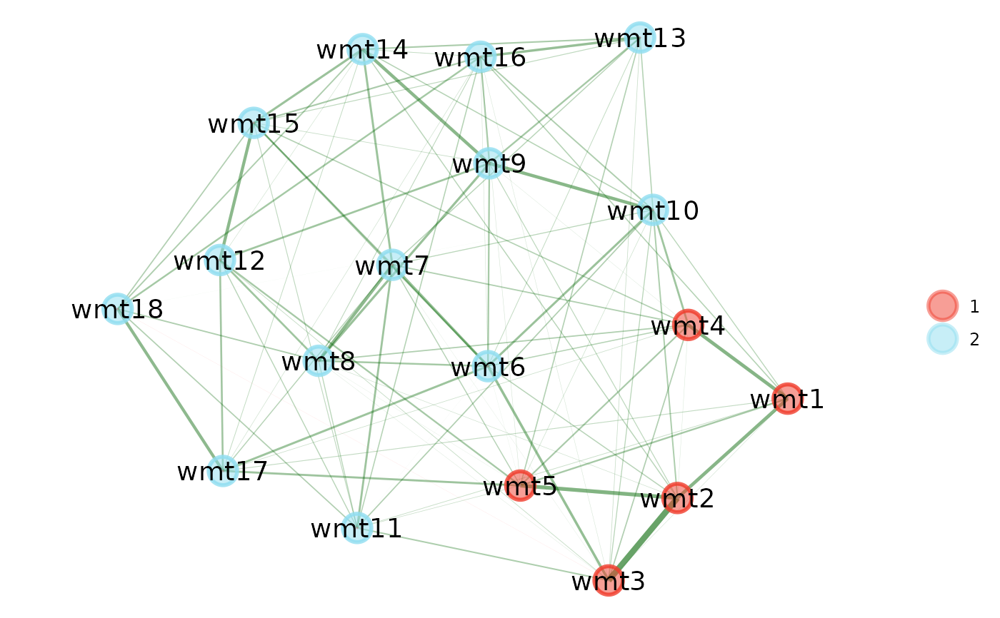

General usage for plots created by EGAnet's S3 methods.
Plots across the EGAnet package leverage {GGally}'s ggnet2
and {ggplot2}'s ggplot.
Most plots allow the full usage of the gg* series functionality and therefore
plotting arguments should be referenced through those packages rather than here in
EGAnet.
The sections below list the functions and their usage for the S3 plot methods.
The plot methods are intended to be generic and without many arguments so that
nearly all arguments are passed to ggnet2 and ggplot.
There are some constraints placed on certain plots to keep the EGAnet style
throughout the (network) plots in the package, so be aware that if some settings are
not changing your plot output, then these settings might be fixed
to maintain the EGAnet style
Do EGAnet plots load slow?
Check out our Wiki on faster plots in
EGAnet (and R)
General Arguments
x---EGAnetobject with available S3 plot method (see full list below)color.palette--- Character (vector). Either a character (length = 1) from the pre-defined palettes incolor_palette_EGAor character (length = total number of communities) using HEX codes (see Color Palettes and Examples sections)layout--- Character (length = 1). Layouts can be set usinggplot.layoutand the ending layout name; for example,gplot.layout.circlecan be set in these functions usinglayout = "circle"ormode = "circle"(see Examples)base--- Numeric (length = 1). Plot to be used as the base for the configuration of the networks. Uses the number of the order in which the plots are input. Defaults to1or the first plotid--- Numeric index(es) or character name(s). IDs to use when plottingdynEGAlevel = "individual". Defaults toNULLor 4 IDs drawn at randomplot.type--- Character (length = 1). WhetherhierEGAnetworks should plotted in a stacked,"multilevel"fashion or as"separate"plots. Defaults to"multilevel"color.match--- Boolean (length = 1). Whether lower order community colors in thehierEGAplot should be "matched" and used as the border color for the higher order communities. Defaults toFALSEp_type--- Character (length = 1). Type of p-value when plottinginvariance. Defaults to"p"or uncorrected p-value. Set to"p_BH"for the Benjamini-Hochberg corrected p-valuep_value--- Numeric (length = 1). The p-value to use alongsidep_typewhen plottinginvariance. Defaults to0.05...--- Additional arguments to pass on toggnet2andgplot.layout(see Examples)
*EGA Plots
bootEGA, dynEGA,
EGA, EGA.estimate,
EGA.fit, hierEGA,
invariance, riEGA
All Available S3 Plot Methods
boot.ergoInfo, bootEGA,
dynEGA, dynEGA.Group, dynEGA.Individual,
dynEGA.Population, EGA,
EGA.estimate, EGA.fit,
hierEGA, infoCluster,
invariance, itemStability,
riEGA
Color Palettes
color_palette_EGA will implement some color palettes in
EGAnet. The main EGAnet style palette is "polychrome".
This palette currently has 40 colors but there will likely be a need to expand it further
(e.g., hierEGA demands a lot of colors).
The color.palette argument will also accept HEX code colors that
are the same length as the number of communities in the plot.
In any network plots, the color.palette argument can be used to
select color palettes from color_palette_EGA as well
as those in the color scheme of RColorBrewer
For more worked examples than below, see Plots in {EGAnet}
Examples
# \donttest{
# Using different arguments in {GGally}'s `ggnet2`
plot(ega.wmt, node.size = 6, edge.size = 4)

# Using a different layout in {sna}'s `gplot.layout`
plot(ega.wmt, layout = "circle") # 'layout' argument
 plot(ega.wmt, mode = "circle") # 'mode' argument
# Using different color palettes with `color_palette_EGA`
## Pre-defined palette
plot(ega.wmt, color.palette = "blue.ridge2")
## University of Virginia colors
plot(ega.wmt, color.palette = c("#232D4B", "#F84C1E"))
## Vanderbilt University colors
## (with additional {GGally} `ggnet2` argument)
plot(
ega.wmt, color.palette = c("#FFFFFF", "#866D4B"),
label.color = "#000000"
)# }
plot(ega.wmt, mode = "circle") # 'mode' argument
# Using different color palettes with `color_palette_EGA`
## Pre-defined palette
plot(ega.wmt, color.palette = "blue.ridge2")
## University of Virginia colors
plot(ega.wmt, color.palette = c("#232D4B", "#F84C1E"))
## Vanderbilt University colors
## (with additional {GGally} `ggnet2` argument)
plot(
ega.wmt, color.palette = c("#FFFFFF", "#866D4B"),
label.color = "#000000"
)# }